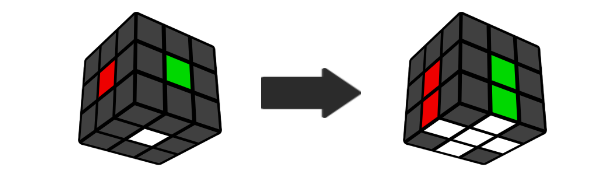
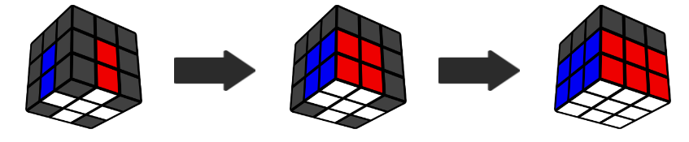
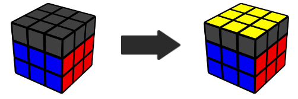
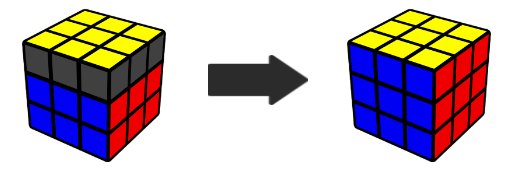

Cross, First 2 Layers, Orientation, Permutation (CFOP) is the most popular method for speedsolving the Rubik's Cube. It is the method used by all 3x3 world record holders in the last decade.

You should have already learned about the cross in the Beginner Method.
This video assumes you can already do the cross, and then goes into the fundamentals of making your cross faster, including: solving the cross on the bottom, ignoring the centers, and dealing with specific cases.
With the right practice, the cross can easily be done in less than 5 seconds.
Step 2. F2L
Instead of solving layer by layer, you can solve 2 layers at the same time. The concepts are harder than the beginner method, but with practice, F2L is much faster than the beginner method.

Intuitive F2L means algorithms are not required, and the process should make sense. You can save around 20 moves per solve by using F2L instead of the beginner method.
Step 3. OLL
Orientation of the Last Layer (OLL) solves the top face by applying algorithms.

Some of these algorithms were already taught in the beginner method. Other algorithms can be memorized by patterns (which is a common technique for memorizing algorithms) shown in the video.
Step 4. PLL
Permutation of the Last Layer (PLL) solves the cube after the top face is completed.

The corner algorithms are long, but very similar to each other. The edge algorithms are quite short and can be memorized visually.